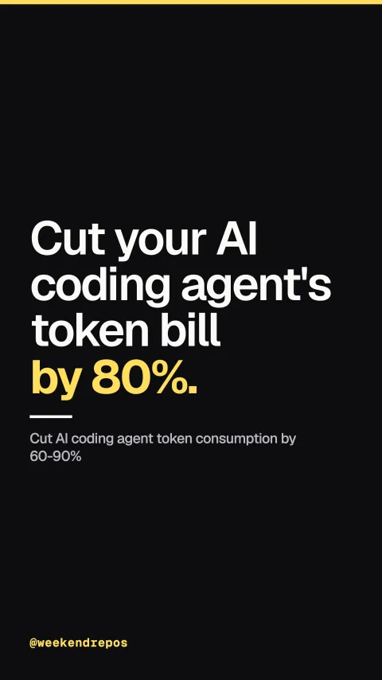

rtk-ai/rtk
Cut AI coding agent token consumption by 60-90%

Cut your AI coding agent's token bill by 80%.
AI agents waste thousands of tokens on terminal noise.
First, terminal output is packed with ANSI codes and noisy stack traces that agents don't need.
verbose terminal output floods agent context windows
rtk intercepts and compresses dev commands transparently.
rtk is a lightweight CLI proxy, stripping noise while preserving critical code signals.
transparent CLI proxy · drops noise and ANSI codes
It slashes token consumption by up to ninety percent.
Across diffs, test runners, and logs, rtk compresses context payloads by up to ninety percent.
token reduction benchmarks across common dev workflows
Zero configuration needed to wrap your daily dev tools.
Install it in seconds. rtk aliases shell tools and connects directly to Claude Code or Cursor.
drop-in replacement for bash, zsh, and agent harnesses
Over 70,000 developers use it to save LLM tokens.
Open source under Apache 2.0, with over seventy thousand GitHub stars.
70k stars · Apache-2.0 · CLI proxy for AI agents